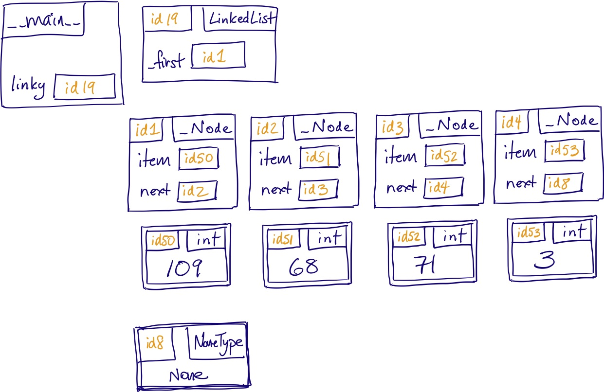
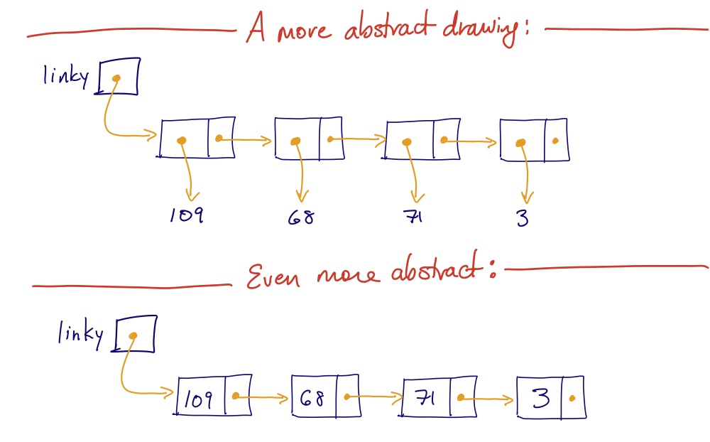

We have seen that Python lists are an array-based implementation of the list ADT and that they have some drawbacks: inserting and deleting items in a list can require shifting many elements in the program’s memory. For example, we saw that inserting and deleting at the front of a built-in list takes time proportional to the length of the list, because every item in the list needs to be shifted by one spot.
This week, we’re going to study a completely different implementation of the List ADT that will attempt to address this efficiency shortcoming. To do so, we’ll use a new data structure called the linked list. Our goal will be to create a new Python class that behaves exactly the same as the built-in list class, changing only what goes on in the private implementation of the class. This will mean that, ultimately, code such as this:
will work whether num is a Python list or an instance of the class we are going to write. We’ll even learn how to make list indexing such as nums[3] = 'spider' work on instances of our class!
The reason why a Python list often requires elements to be shifted back and forth is that the elements of a Python list are stored in contiguous slots in memory. What if we didn’t attempt to have this contiguity? If we had a variable referring to the first element of a list, how would we know where the rest of the elements were? We can solve this easily, if we store along with each element a reference to the next element in the list.
This bundling of data—an element plus a reference to the next element–should suggest something familiar to you: the need for a new class whose instance attributes are exactly these pieces of data. We’ll call this class a node, and implement it in Python as follows:
An instance of _Node represents a single element of a list; to represent a list of n elements, we need n_Node instances. The references in all of their next attributes link the nodes together into a sequence, even though they are not stored in consecutive locations in memory, and of course this is where linked lists get their name.
The second class we’ll use in our implementation is a LinkedList class, which will represent the list itself. This class is the one we want client code to use, and in it we’ll implement methods that obey the same interface as the built-in list class.
Our first version of the class has a very primitive initializer that always creates an empty list.
Of course, in order to do anything interesting with linked lists, we need to be able to create arbitrarily long linked lists! We’ll see more sophisticated ways of doing this later, but for practice here we’ll violate privacy concerns and just manipulate the private attributes directly.
The most common mistake students make when first starting out with linked lists is confusing an individual node object with the item it stores. So in the example above, there’s a big difference between node1 and node1.item: the former is a _Node object containing the number 10, while the latter is the number 10 itself!
As you start writing code with linked lists, you’ll sometimes want to operate on nodes, and sometimes want to operate on items. Making sure you always know exactly which type you’re working with is vital to your success here.
Because each element of a linked list is wrapped in a _Node object, complete memory model diagrams of linked lists are quite a bit larger than those corresponding to Python’s array-based lists. For example, the following is a diagram showing a linked list named linky with four elements, in order 109, 68, 71, 3.
While memory model diagrams are always a useful tool for understanding subtle memory errors—which certainly come up with linked lists!—they can be overkill if you want a quick and dirty linked list diagram. So below we show two stripped down versions of the memory model diagram, which remove all of the “boilerplate” type and attribute names. The first one keeps the “item” references as arrows to separate memory objects, while the second goes a step further in simplification by writing the numbers directly in the node boxes.
